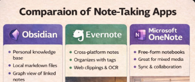

Compared with Obsidian
Obsidian is an extensible local knowledge platform with a broad plugin ecosystem.
StillPoint: a more integrated, opinionated workbench whose core tools are designed to work together out of the box.
StillPoint starts with a normal vault folder full of plain Markdown files. Open a page and write. When you need more, navigation, tasks, maps, diagrams, terminals, agents, and MCP already understand the same workspace.

Your Markdown files are the source of truth—not an export format or a database hidden behind the application. StillPoint adds useful structure around those files without asking you to give them up.
Notes first. Pages, headings, links, and quick navigation stay at the center.
Tools together. Journals, tasks, maps, diagrams, and local tools share vault context.
Depth is optional. Use it as a focused notes app, then reach for terminals or AI only when useful.
These are all capable tools. The distinction is what each one is designed around.
Obsidian is an extensible local knowledge platform with a broad plugin ecosystem.
StillPoint: a more integrated, opinionated workbench whose core tools are designed to work together out of the box.
Notion centers shared pages, databases, structured workflows, and team collaboration.
StillPoint: a personal, local workspace where ordinary Markdown files remain the source of truth.
VS Code is a programming environment that can be extended into a capable notes setup.
StillPoint: knowledge-native pages, links, journals, tasks, maps, and diagrams—with terminals and agents available beside them.
Anytype organizes a local-first workspace around typed objects, properties, and relations.
StillPoint: ordinary folders and Markdown pages stay readable and useful to editors, scripts, and tools outside the app.
Zettlr is especially strong for research writing, citations, Pandoc workflows, and publication.
StillPoint: an ongoing knowledge workspace for daily notes, projects, tasks, relationships, visual thinking, and local tools.
Logseq centers blocks and outlines; OneNote excels at ink and freeform capture; Evernote emphasizes capture and clipping; and Cursor centers AI-assisted software development.
StillPoint centers durable notes: a calm writing surface that can grow into a connected Knowledge IDE without requiring that deeper workflow.
Choose StillPoint when you want the simplicity of plain Markdown and the leverage of an integrated knowledge workbench—without having to choose between them.